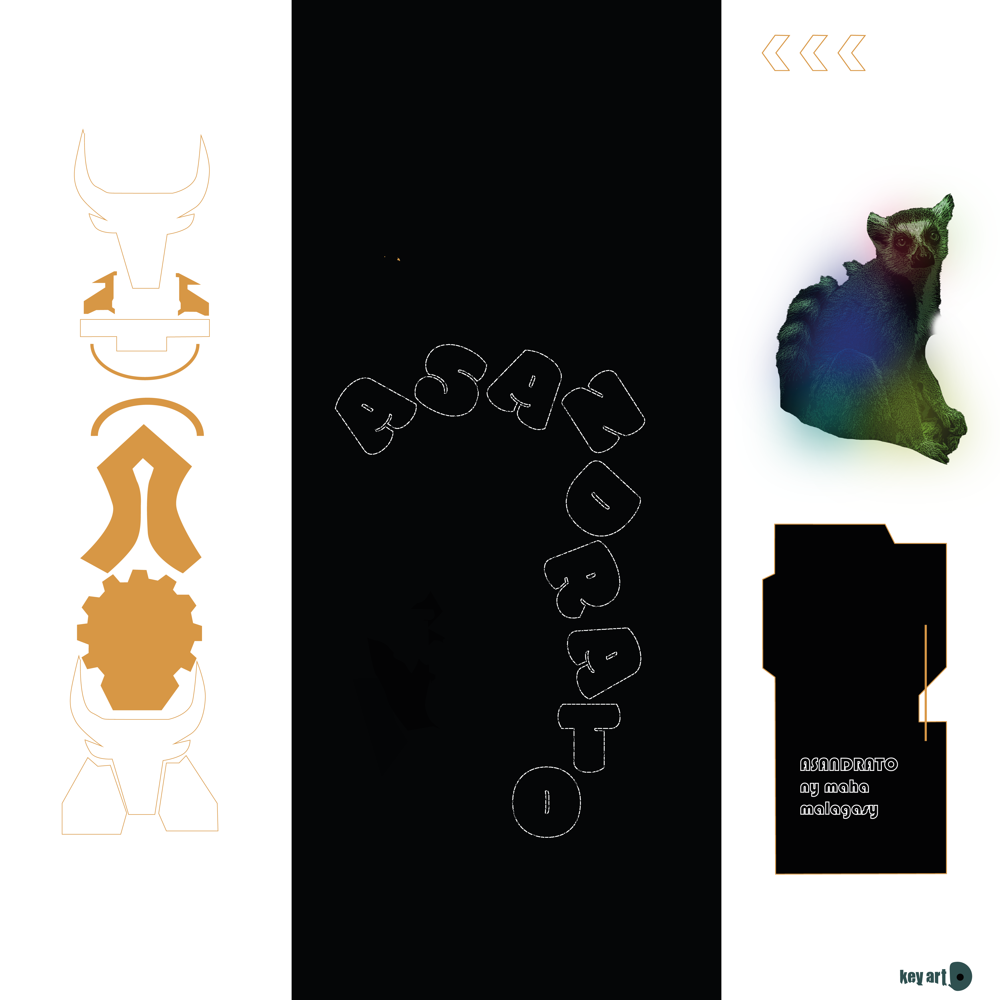
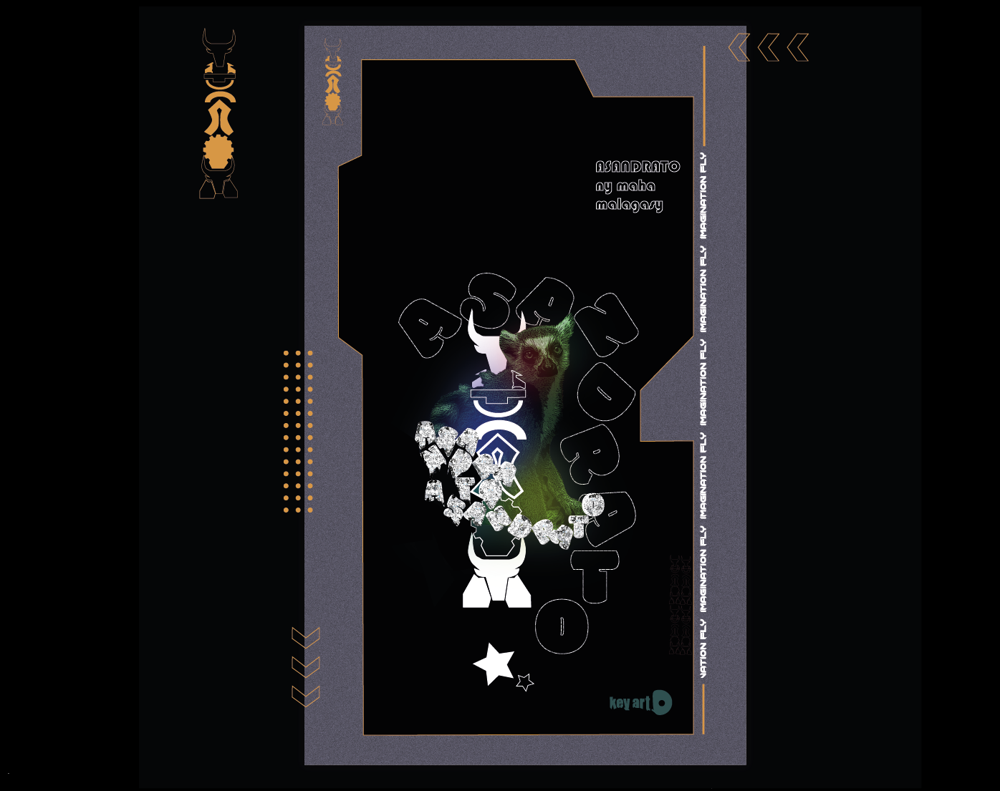

PROCESS
CREA
Dans sa création , le plus grand défis était de persuader a l'aide d'une image
les valeurs culturelles malagasy
tout en restant moderne et attrayant.
Le but du projet est de rehausser la culture Malagasy
via un visuel .

Dans sa création , le plus grand défis était de persuader a l'aide d'une image
les valeurs culturelles malagasy
tout en restant moderne et attrayant.

Un visuel avec plusieurs éléments qui distinguent les Malagasy notament : Le Maki , le Aloalo , le Zébu
et les couleurs du drapeau malagasy .
Pour créer une image adaptée au Logo,
plusieurs outils ont été mis en œuvre.
Photoshop a été utilisé pour créer un visuel percutant et harmonieux.
Illustrator a servi à concevoir le logo en version vectorielle.